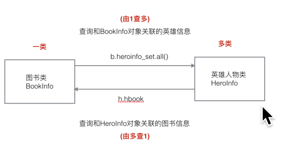
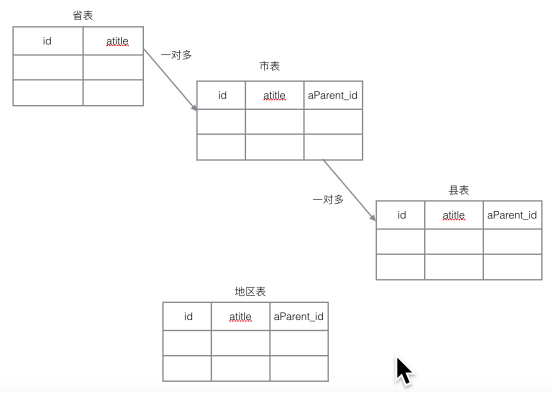
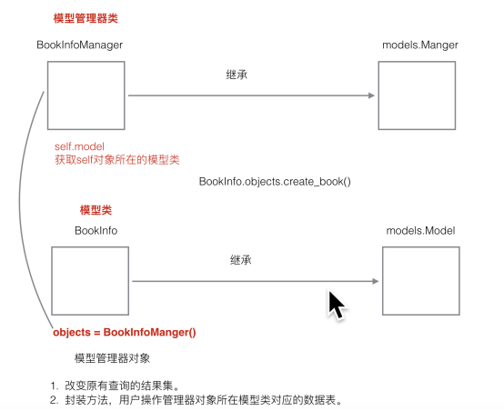

原文连接:https://www.cnblogs.com/yifchan/p/python-1-26.html
Django1.8.2中文文档：Django1.8.2中文文档
模型类关系
1）一对多关系
例：图书类-英雄类
models.ForeignKey() 定义在多的类中。
2）多对多关系
例：新闻类-新闻类型类 体育新闻 国际新闻
models.ManyToManyField() 定义在哪个类中都可以。
3）一对一关系
例：员工基本信息类-员工详细信息类. 员工工号
models.OneToOneField定义在哪个类中都可以。
多对多示例


# 新闻类型类
class NewsType(models.Model):
# 类型名
type_name = models.CharField(max_length=20)
# 关系属性，代表类型下面的信息
type_news = models.ManyToManyField('NewsInfo')
# 新闻类
class NewsInfo(models.Model):
# 新闻标题
title = models.CharField(max_length=128)
# 发布时间
pub_date = models.DateTimeField(auto_now_add=True)
# 信息内容
content = models.TextField()
# 关系属性, 代表信息所属的类型
# news_type = models.ManyToManyField('NewsType')# 员工基本信息类
class EmployeeBasicInfo(models.Model):
# 姓名
name = models.CharField(max_length=20)
# 性别
gender = models.BooleanField(default=False)
# 年龄
age = models.IntegerField()
# 关系属性,代表员工的详细信息
employee_detail = models.OneToOneField('EmployeeDetailInfo')
# 员工详细信息类
class EmployeeDetailInfo(models.Model):
# 联系地址
addr = models.CharField(max_length=256)
# 教育经历
# 关系属性，代表员工基本信息
# employee_basic = models.OneToOneField('EmployeeBasicInfo')重点关注一对多的关系；
模型-关联查询
关联查询-一对多
查询和对象关联的数据
在一对多关系中，一对应的类我们把它叫做一类，多对应的那个类我们把它叫做多类，我们把多类中定义的建立关联的类属性叫做关联属性。
例：查询id为1的图书关联的英雄的信息。
b=BookInfo.objects.get(id=1)
b.heroinfo_set.all()
通过模型类查询：
HeroInfo.objects.filter(hbook__id=1)例：查询id为1的英雄关联的图书信息。
h = HeroInfo.objects.get(id=1)
h.hbook
通过模型类查询：
BookInfo.objects.filter(heroinfo__id=1)
格式：

由一类的对象查询多类的时候：
一类的对象.多类名小写_set.all() #查询所用数据
由多类的对象查询一类的时候：
多类的对象.关联属性 #查询多类的对象对应的一类的对象
由多类的对象查询一类对象的id时候：
多类的对象. 关联属性_id
通过模型类实现关联查询
关联查询
1.通过模型类实现关联查询时，要查哪个表中的数据，就需要通过哪个类来查。
2.写关联查询条件的时候，如果类中没有关系属性，条件需要些对应类的名，如果类中有关系属性，直接写关系属性。
例：查询图书信息，要求图书关联的英雄的描述包含'八'。
BookInfo.objects.filter(heroinfo__hcomment__contains='八')例：查询图书信息，要求图书中的英雄的id大于3.
BookInfo.objects.filter(heroinfo__id__gt=3)例：查询书名为“天龙八部”的所有英雄。
HeroInfo.objects.filter(hbook__btitle='天龙八部')
通过多类的条件查询一类的数据：
一类名.objects.filter(多类名小写__多类属性名__条件名)
通过一类的条件查询多类的数据：
多类名.objects.filter(关联属性__一类属性名__条件名)
模型-插入和删除
插入、更新和删除
调用一个模型类对象的save方法的时候就可以实现对模型类对应数据表的插入和更新。
调用一个模型类对象的delete方法的时候就可以实现对模型类对应数据表数据的删除。
插入示例：
# 1.创建bookinfo对象
b = models.BookInfo()
b.btitle = "流星蝴蝶剑"
b.bpub_date = date(1990, 1, 1)
# 2.保存进数据库
b.save()删除示例：
# 1.获取书籍对象
book = models.BookInfo.objects.get(id=bid)
# 2.删除书籍
book.delete()
模型-自关联

自关联是一种特殊的一对多的关系。
案例：显示广州市的上级地区和下级地区。
地区表：id, atitle, aParent_id;
mysql终端中批量执行sql语句：source areas.sql;
自关联案例
models.py
class AreaInfo(models.Model):
"""地区模型类"""
# 地区名称
atitle = models.CharField(max_length=20)
# 关系属性，代表当前地区的父级地区
aParent = models.ForeignKey("self", null=True, blank=True)
E:\Pycharm\Pycharm_save\cp15\test2>cd booktest
E:\Pycharm\Pycharm_save\cp15\test2\booktest>mysql -uroot -p
Enter password: ****
Welcome to the MySQL monitor. Commands end with ; or \g.
Type 'help;' or '\h' for help. Type '\c' to clear the current input statement.
mysql> use test1000;
Database changed
mysql> source area.sql
area.html
<h1>地区</h1>
<p>{{ area }}</p>
<h1>父级地区</h1>
<p>{{ parent }}</p>
<h1>子级地区</h1>
<ul>
{% for child in children %}
<li>{{ child }}</li>
{% endfor %}
</ul>Views.py
def areas(request):
'''获取广州市的上级地区和下级地区'''
# 1.获取广州市的信息
area = AreaInfo.objects.get(atitle='广州市')
# 2.查询广州市的上级地区
parent = area.aParent
# 3.查询广州市的下级地址
children = area.areainfo_set.all()
# 使用模板
return render(request, 'booktest/areas.html', {'area': area, 'parent': parent, 'children': children})Urls.py
from django.conf.urls import url
from booktest import views
urlpatterns = [
url(r'^areas/$', views.areas), # 自关联案例
]应注意浏览器中的url后面的’/’。
模型-模型管理器
什么是管理器？
BookInfo.objects.all()->objects是一个什么东西呢？
答：objects是Django帮我自动生成的管理器对象，通过这个管理器可以实现对数据的查询。
objects是models.Manger类的一个对象。自定义管理器之后Django不再帮我们生成默认的objects管理器。
自定义管理器
可以在BookInfo下自定义一个 book = models.Manager()
这时就不能使用 BookInfo.objects.xxx了，而是BookInfo.book.xxx，但这样并没有什么用。
我们一般这样用：
- 1)自定义一个管理器类，这个类继承models.Manger类。
- 2)再在具体的模型类里定义一个自定义管理器类的对象。
自定义管理器类的应用场景
1）改变查询的结果集。
比如调用BookInfo.books.all()返回的是没有删除的图书的数据。
2）添加额外的方法。
管理器类中定义一个方法帮我们操作模型类对应的数据表。
使用self.model()就可以创建一个跟自定义管理器对应的模型类对象。
自定义管理器示例
自定义管理器代码
class BookInfoManager(models.Manager):
'''图书模型管理器类'''
# 1.改变原有查询的结果集
def all(self):
# 1.调用父类的all方法，获取所有数据
books = super().all() # QuerySet
# 2.对books中的数据进行过滤
books = books.filter(isDelete=False)
# 返回books
return books
# 2.封装方法，操作模型类对应的数据表（增删改查)
def create_book(self, btitle, bpub_date):
'''添加一本图书'''
# 1.创建一个图书对象
# 获取self所在的模型类
model_class = self.model
book = model_class()
# book = models.BookInfo()
book.btitle = btitle
book.bpub_date = bpub_date
# 2.添加进数据库
book.save()
# 3.返回book
return book
# 一类
# booktest2_bookinfo
class BookInfo(models.Model):
'''图书模型类'''
# 图书名称
btitle = models.CharField(max_length=20, db_column='title')
# 图书名字唯一
# btitle = models.CharField(max_length=20, unique=True, db_index=True)
# 价格,最大位数为10,小数为2
# bprice = models.DecimalField(max_digits=10, decimal_places=2)
# 出版日期
bpub_date = models.DateField()
# bpub_date = models.DateField(auto_now_add=True) # 创建时间
# bpub_date = models.DateField(auto_now=True) # 更新时间
# 阅读量
bread = models.IntegerField(default=0)
# 评论量
bcomment = models.IntegerField(default=0)
# 删除标记
isDelete = models.BooleanField(default=False)
# book = models.Manager() # 自定一个Manager类对象，管理器对象
objects = BookInfoManager() # 自定义一个BookInfoManager类的对象
# @classmethod
# def create_book(cls, btitle, bpub_date):
# '''添加一本图书'''
# # 创建一个cls类的对象
# obj = cls()
# obj.btitle = btitle
# obj.bpub_date = bpub_date
# # 添加进数据库
# obj.save()
# # 返回obj
# return obj
自定义管理器的使用：
1.
BookInfo.objects.all() # objects是管理器中的objects，返回的是一个isDelete=0的值；2.
from booktest.models import BookInfo
BookInfo.objects.create_book('test2', '1991-1-1')其实在models.Manager里面已经封装了create方法，使用示例如下：
BookInfo.objects.create(btitlt='test3', bpub_date='1991-1-1')
应注意如果定义的图书模型类名换了比如class BookInfo，这个时候BookInfoManager中的book = BookInfo()也要改成
book = BookInfo1()，这样会很麻烦，但幸好，Manager里面有考虑到这一点，
# 获取self所在的模型类
model_class = self.model
book = model_class()
# 上面两句相当于最后一句。
# book = BookInfo()
小结：

主旨：模型管理器类和模型类是通过在模型类中定义objects = BookInfoManager()，在模型管理器类中通过
model_class = self.model； book = model_class() 来建立关系的。
自定义模型管理器类方法获取默认收货地址
定义地址模型管理器类
class AddressManager(models.Manager):
"""地址管理器类"""
def get_default_address(self, user):
"""返回默认的地址"""
# self.model：获取self对象所在的模型类
try:
address = self.get(user=user, is_default=True)
except self.model.DoesNotExist:
# 不存在默认收货地址
address = None
return address地址模型类中引用地址模型管理器类的objects
class Address(BaseModel):
'''地址模型类'''
user = models.ForeignKey('User', verbose_name='所属账户')
receiver = models.CharField(max_length=20, verbose_name='收件人')
addr = models.CharField(max_length=256, verbose_name='收件地址')
zip_code = models.CharField(max_length=6, null=True, verbose_name='邮政编码')
phone = models.CharField(max_length=11, verbose_name='联系电话')
is_default = models.BooleanField(default=False, verbose_name='是否默认')
# 自定义一个模型管理器对象
objects = AddressManager()在CBV中使用自定义模型管理器类中的方法
class AddressView(LoginRequiredMixin, View):
"""用户中心-订单页"""
def get(self, request):
"""返回用户中心信息页面"""
# 获取用户的默认收货地址
user = request.user
# try:
# address = Address.objects.get(user=user, is_default=True)
# except Address.DoesNotExist:
# address = None
# 使用自定义地址模型类管理器对象的获取默认收货地址方法
address = Address.objects.get_default_address(user)
# print("address:", address)
return render(request, "user_center_site.html", {"page": "address", "address": address})
模型-元选项
Django默认生成的表名：应用名小写_模型类名小写。
元选项：需要在模型类中定义一个元类Meta,在里面定义一个类属性db_table就可以指定表名。
如果改了应用名，而表名有不会自动更改，这个时候，就会出问题；
为了解决这个问题，我们要让模型类的表名不依赖于应用名；
使用 元选项，指定表名。
class BookInfo(models.Model):
'''图书模型类'''
btitle = models.CharField(max_length=20, db_column='title')
bpub_date = models.DateField()
bread = models.IntegerField(default=0)
bcomment = models.IntegerField(default=0)
isDelete = models.BooleanField(default=False)
objects = BookInfoManager() # 自定义一个BookInfoManager类的对象
# 使用元选项
class Meta:
db_table = 'bookinfo' # 指定模型类对应表名